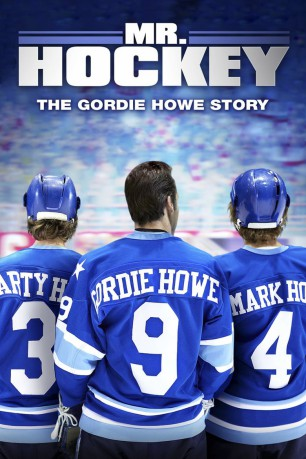
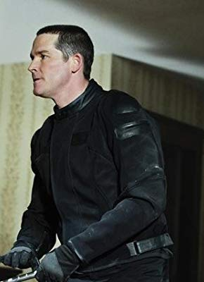
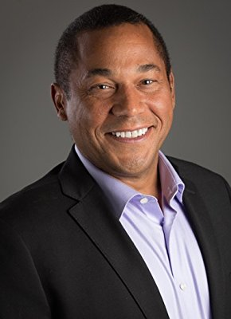

#11117 Mr. Hockey
Alternativ: Mr. Hockey: The Gordie Howe Story (Englischer Titel)
 
 IMDB-Wertung: 6.7 / 10
IMDB-Wertung: 6.7 / 10  Metascore: 0
Metascore: 0 
Nach 25 Jahren beendet der weltberühmte Eishockeyspieler Gordie Howe seine erfolgreiche Karriere. Doch schnell merkt er, dass der Ruhestand nichts für ihn ist. Angestachelt durch seine Söhne, die ebenfalls einer großen Karriere auf dem Eis entgegensehen, versucht der unermüdliche Gordie nochmal allen zu beweisen, dass er mit 43 Jahren noch lange nicht zum alten Eisen gehört. Da kommt ihm das Angebot, zusammen mit seinen Söhnen Mark und Marty bei den Houston Aeros in der neu gegründeten und stark umstrittenen World Hockey Association zu spielen, gerade recht. Durch die Zweifel der Presse, vieler WHA Gegner und nicht zuletzt die seines alten Chefs, dem Besitzer der Red Wings, will Gordie nicht nur sich selbst beweisen, dass er einer der größten Eishockeyspieler aller Zeiten ist. Nach wahren Begebenheiten erzählt der Film das Leben von der Eishockeylegende Gordie "Mr. Hockey" Howe nach seinem eigentlichen Ruhestand.
Jahr: 2013
Dauer: 86 Minuten
FSK: 0
Land: USA Studio: Anderson DigitalTonspuren: DD2.0 - ,
Untertitel:
Auflösung: 1080p (1920x1080) Größe: 4239 MB
Genre: Drama, Sport, Biographie
Regisseur: Andy Mikita
Drehbuch: Malcolm MacRury
Soundtrack: James Jandrisch
Darsteller:
 Michael Shanks als Gordie Howe
Michael Shanks als Gordie Howe- Kathleen Robertson als Colleen Howe
- Martin Cummins als Bill Dineen
- Dylan Playfair als Marty Howe
- Andrew Herr als Mark Howe
- Emma Grabinsky als Cathy Howe
 Andrew Kavadas als Doug Harvey
Andrew Kavadas als Doug Harvey Teach Grant als Smoky McLeod
Teach Grant als Smoky McLeod Lochlyn Munro als Bobby Hull
Lochlyn Munro als Bobby Hull Donnelly Rhodes als NHL Lawyer
Donnelly Rhodes als NHL Lawyer- Karl Thordarson als Jack Stanfield
-  Brad Turner als John Schella
 Adam Hurtig als Jim Smith
Adam Hurtig als Jim Smith- Tom Anniko als Bruce Norris
 John B. Lowe als NHL Lawyer
John B. Lowe als NHL Lawyer-  Ernie Pitts als Detroit Sportswriter
- Grayson Maxwell Gurnsey als Fan Boy #1
- Jacob Klick als Joe Szura
- Terry Ray als Houston Aeros Player (uncredited)
- Karen Tusa als Friend of Colleen Howe (uncredited)
- Ali Tataryn als Mary James
- Graham Mayes als Murray Howe
- Paul Magel als Ted Taylor
- Erik J. Berg als Tommy
- Bryan Clark als Minnesota Enforcer
- Brock Couch als Mike Walton
- Gio Tropea als Former NHL Player
- Curt Keilback als Houston Sportscaster
- Curtis Moore als Houston TV Reporter
- Candace Smith als Big Houstion Woman Fan
- James Juce als Bartender
- Adam Brooks als Drunk Minnesota Fan
- R.J. Adams als Harold Ballard
- Darren Felbel als Hospital Doctor
- William O'Donnell als WHA Draftee
- Gordon Tanner als Ted Lindsay
- Jim Kirby als Hockey Executive (uncredited)
- Marjorie Roden als Accordion playing fan (uncredited)
Datei: X:\2013(I-M)\Mr. Hockey (2013, FSK0, 1920x1080).mkv seit 24.04.2019
Festplatte: HD 2013(I-Z)-2014(A-Z)
 Es gibt insgesamt 89 Filme in der Gruppe '2013(I-M)'
Es gibt insgesamt 89 Filme in der Gruppe '2013(I-M)'